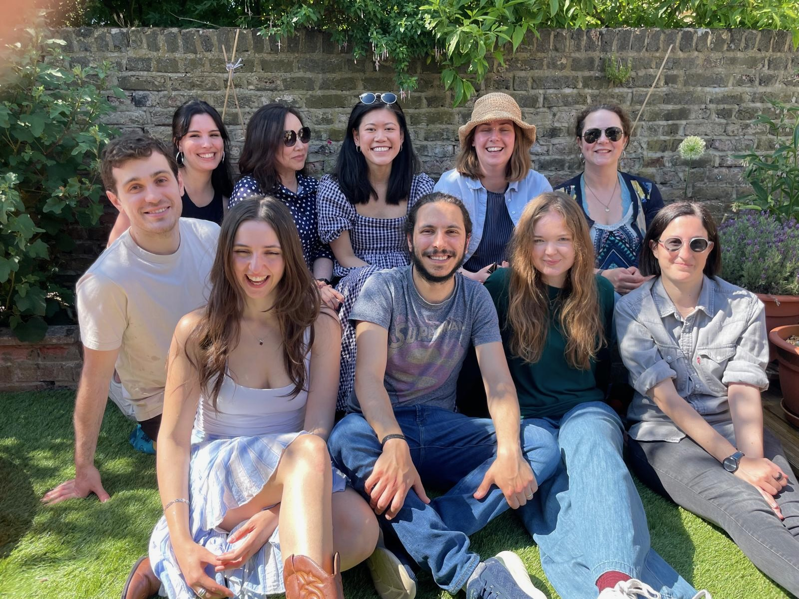
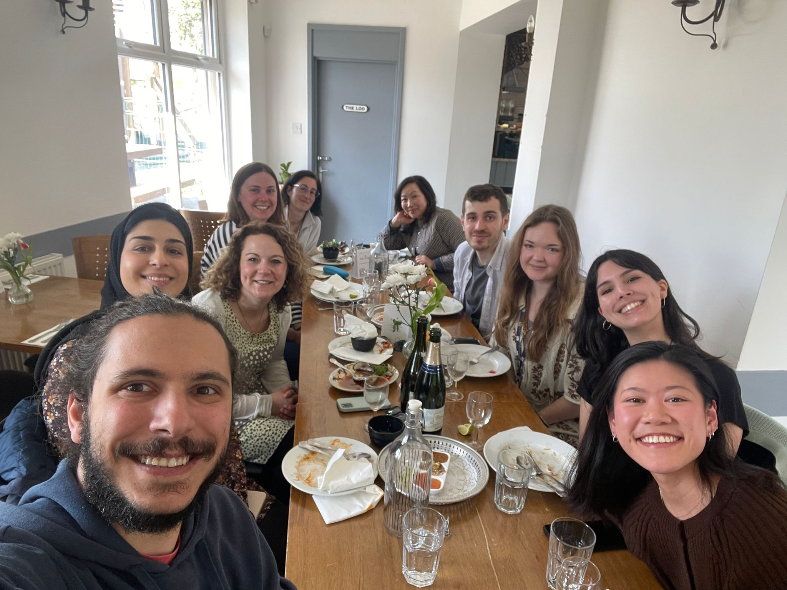
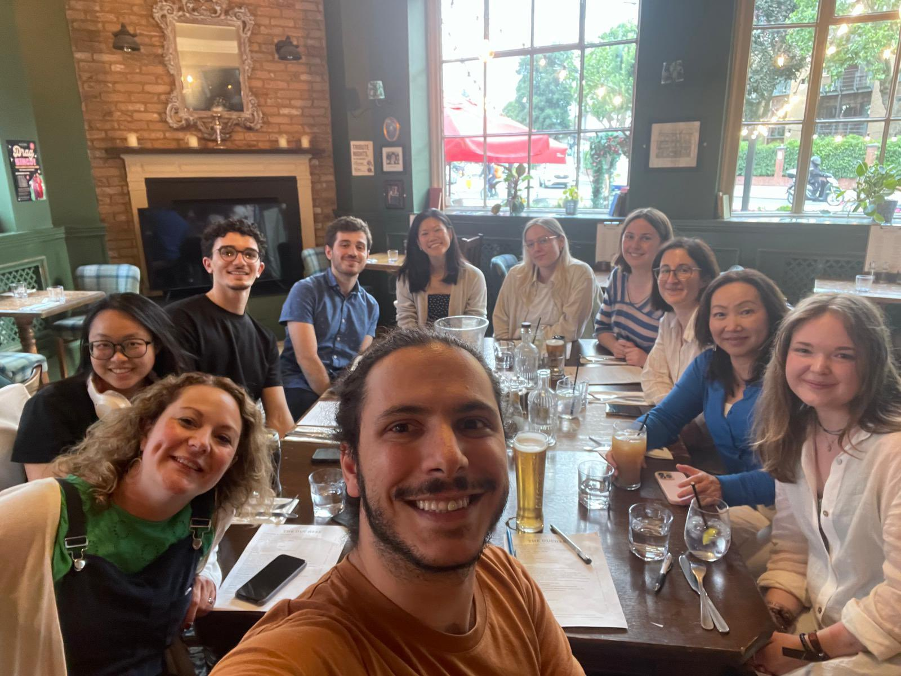

Transposons | Chromatin | Development
Studying the transcriptional and epigenetic regulation of mammalian development.
Exploring the role and regulation of transposons during embryogenesis.
Percharde Lab Page at the MRC LMS
Follow Michelle on twitter @MPercharde
and Bluesky @mpercharde.bsky.social
Contact at perchardelab @ gmail.com
BLUESKY
NEWS
03.11.25
A big welcome to Dr. Daniel Moore! Daniel joins us for his postdoc after completing his PhD in the Tedesco lab at the Francis Crick Institute.17.05.25
The CAD lab celebrated its 6th birthday today with a lovely barbecue in sunny London!

14.05.25
New review paper out! Led by Dr. Bryony Leeke, we highlight new findings on nucleoli dynamics in development, their intriguing roles in chromatin organisation, and more. Check out our publications page and read here.08.04.25
The lab went out for a delicious lunch today to celebrate our progress this year and plan our vision for the future. Excited for what's to come!

26.03.25
We've released another pre-print! In a project led by Dr. Ferran Garcia-Llagostera, we investigate the role of the innate immune system in safeguarding against harmful effects of TE activity during early development. Click here to read!25.11.24
NEW PREPRINT ALERT: Using CRISPRa, we disentangle the close relationship between Dux and MERVL elements in the induction of the 2-cell like state, bioRxiv. This project was headed by Paul Chammas.02.10.24
Welcome our new PhD students Klaudia Stanik and Antonia Ramos!12.07.24
Welcome to Dr Audrey Putman! Audrey joins us for her postdoc from the Miska lab in Cambridge. We celebrated with a pub quiz and won first and third place!

18.08.22
Welcome Darren Taylor! Darren joins us for his postdoc from the Branco lab at QMUL.10.03.22
Our paper on nucleolar biology in early embryos is out at Genes & Development! See the publications page for more info. Welcome to Nadisha Gamage (RFI student joint with LMS) and Alexandra Rampasekova (Imperial College MSc student) to the lab.20.01.22
Two pieces of good news for the lab: 1) our first lab paper about nucleolar-based regulation of Dux and the 2-cell state is in revision! Click here for the preprint. 2) Kamila Musialik joins the lab as our newest PhD student, joint with Petra Hajkova's lab.07.10.21
Welcome to the lab Yi Xuan, our newest PhD student! Korean food for the lab to celebrate.
05.07.21
More new people! Karolina joins us as an LMS summer student to get her first taste of a lab research project.23.06.21
A belated welcome to Bryony Leeke who joined the lab for her postdoc last month! We had a recent trip out for dinner and cocktails to celebrate.
06.04.20
Welcome to Paul Chammas who has joined the lab for his postdoc! See more on the lab members page here.Also new paper out together with the Shen lab on repeat-based regulation of gene expression in Cell Reports - see our publications page.